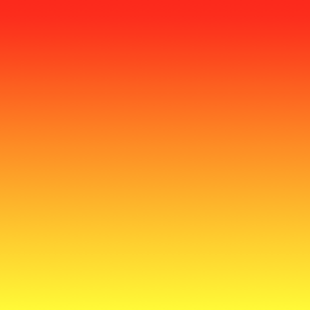
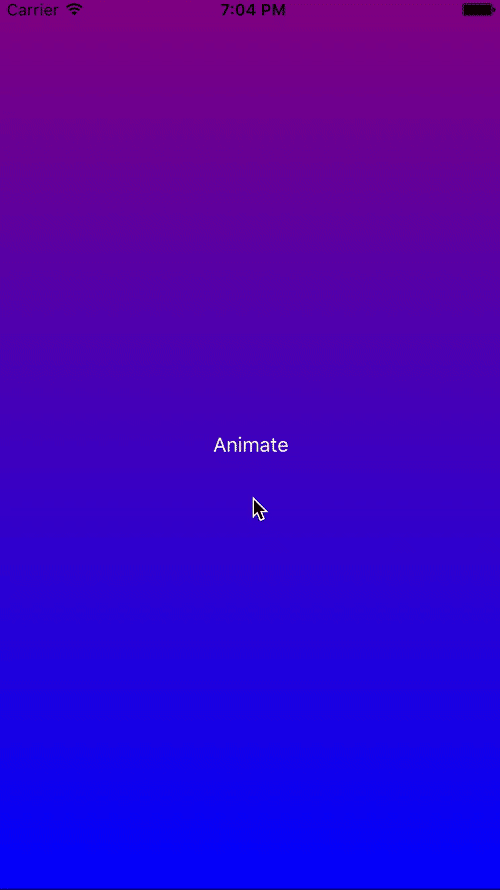
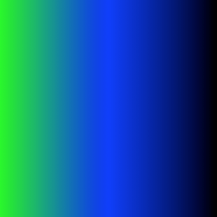
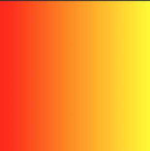
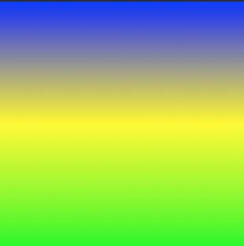

Creating a CAGradientLayer
// View to hold the CAGradientLayer.
let view: UIView = UIView(frame: CGRect(x: 0, y: 0, width: 320, height: 320))
// Initialize gradient layer.
let gradientLayer: CAGradientLayer = CAGradientLayer()
// Set frame of gradient layer.
gradientLayer.frame = view.bounds
// Color at the top of the gradient.
let topColor: CGColor = UIColor.red.cgColor
// Color at the bottom of the gradient.
let bottomColor: CGColor = UIColor.yellow.cgColor
// Set colors.
gradientLayer.colors = [topColor, bottomColor]
// Set locations of the colors.
gradientLayer.locations = [0.0, 1.0]
// Insert gradient layer into view's layer heirarchy.
view.layer.insertSublayer(gradientLayer, at: 0)
Result :

##Animating a color change in CAGradientLayer.
// Get the current colors of the gradient.
let oldColors = self.gradientLayer.colors
// Define the new colors for the gradient.
let newColors = [UIColor.red.cgColor, UIColor.yellow.cgColor]
// Set the new colors of the gradient.
self.gradientLayer.colors = newColors
// Initialize new animation for changing the colors of the gradient.
let animation: CABasicAnimation = CABasicAnimation(keyPath: "colors")
// Set current color value.
animation.fromValue = oldColors
// Set new color value.
animation.toValue = newColors
// Set duration of animation.
animation.duration = 0.3
// Set animation to remove once its completed.
animation.isRemovedOnCompletion = true
// Set receiver to remain visible in its final state when the animation is completed.
animation.fillMode = kCAFillModeForwards
// Set linear pacing, which causes an animation to occur evenly over its duration.
animation.timingFunction = CAMediaTimingFunction(name: kCAMediaTimingFunctionLinear)
// Set delegate of animation.
animation.delegate = self
// Add the animation.
self.gradientLayer.addAnimation(animation, forKey: "animateGradientColorChange")
Result :

##Creating a horizontal CAGradientLayer with multiple colors.
// View to hold the CAGradientLayer.
let view: UIView = UIView(frame: CGRect(x: 0, y: 0, width: 320, height: 320))
// Initialize gradient layer.
let gradientLayer: CAGradientLayer = CAGradientLayer()
// Set frame of gradient layer.
gradientLayer.frame = view.bounds
// Color at the top of the gradient.
let topColor: CGColor = UIColor.greenColor().CGColor
// Color at the middle of the gradient.
let middleColor: CGColor = UIColor.blueColor().CGColor
// Color at the bottom of the gradient.
let bottomColor: CGColor = UIColor.blackColor().CGColor
// Set colors.
gradientLayer.colors = [topColor, middleColor, bottomColor]
// Set start point.
gradientLayer.startPoint = CGPoint(x: 0.0, y: 0.5)
// Set end point.
gradientLayer.endPoint = CGPoint(x: 1.0, y: 0.5)
// Insert gradient layer into view's layer heirarchy.
view.layer.insertSublayer(gradientLayer, atIndex: 0)
Result :

##Creating a horizontal CAGradientLayer.
// View to hold the CAGradientLayer.
let view: UIView = UIView(frame: CGRect(x: 0, y: 0, width: 320, height: 320))
// Initialize gradient layer.
let gradientLayer: CAGradientLayer = CAGradientLayer()
// Set frame of gradient layer.
gradientLayer.frame = view.bounds
// Color at the top of the gradient.
let topColor: CGColor = UIColor.redColor().CGColor
// Color at the bottom of the gradient.
let bottomColor: CGColor = UIColor.yellowColor().CGColor
// Set colors.
gradientLayer.colors = [topColor, bottomColor]
// Set start point.
gradientLayer.startPoint = CGPoint(x: 0.0, y: 0.5)
// Set end point.
gradientLayer.endPoint = CGPoint(x: 1.0, y: 0.5)
// Insert gradient layer into view's layer heirarchy.
view.layer.insertSublayer(gradientLayer, atIndex: 0)
Result :

##Creating a CGGradientLayer with multiple colors.
// View to hold the CAGradientLayer.
let view: UIView = UIView(frame: CGRect(x: 0, y: 0, width: 320, height: 320))
// Initialize gradient layer.
let gradientLayer: CAGradientLayer = CAGradientLayer()
// Set frame of gradient layer.
gradientLayer.frame = view.bounds
// Color at the top of the gradient.
let topColor: CGColor = UIColor.blue.cgColor
// Color at the middle of the gradient.
let middleColor: CGColor = UIColor.yellow.cgColor
// Color at the bottom of the gradient.
let bottomColor: CGColor = UIColor.green.cgColor
// Set colors.
gradientLayer.colors = [topColor, middleColor, bottomColor]
// Set locations of the colors.
gradientLayer.locations = [0.0, 0.5, 1.0]
// Insert gradient layer into view's layer heirarchy.
view.layer.insertSublayer(gradientLayer, at: 0)
Result :

Syntax
CAGradientLayer() // Returns an initialized CALayer object.
-------------------
CAGradientLayer(layer: layer) // Override to copy or initialize custom fields of the specified layer.
Parameters
| Parameter | Details |
|---|---|
| color | An array of CGColorRef objects defining the color of each gradient stop. Animatable. |
| locations | An optional array of NSNumber objects defining the location of each gradient stop. Animatable. |
| endPoint | The end point of the gradient when drawn in the layer’s coordinate space. Animatable. |
| startPoint | The start point of the gradient when drawn in the layer’s coordinate space. Animatable. |
| type | Style of gradient drawn by the layer. Defaults to kCAGradientLayerAxial. |
Remarks
- Use
startPointandendPointto change the orientation of theCAGradientLayer. - Use the
locationsto affect the spread/positions of the colors.